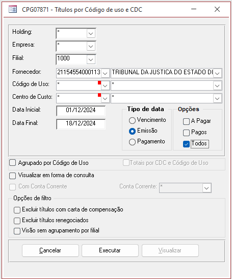

Observação: ao contrário das demais planilhas, essa é referente ao mês CORRENTE!
- Abrir a planilha J:\Contabilidade\Provisões\Contingências\Utilização recursos aplicação- Alim. Escolar\levantamento depositos e indenizações trabalhistas jan a 29-04-24.xls
- Pegar o razão da conta 1.50.05.05.001 Depósitos Judiciais e ver o que entrou no mês corrente
- Pegar o razão da conta 5.10.20.15.431 Indenizações Trabalhistas/Judiciais e ver o que entrou no mês corrente
- Fazer busca no módulo Contas a Pagar, Matriz 1000 conforme o print abaixo e ver se tem mais alguma coisa a entrar no mês corrente.
- RELATÓRIOS ⇒ Títulos por código de uso e CDC
- Note que no fornecedor precisa colocar "TRIBUNAL REGIONAL DO TRABALHO".
- Fazer a busca acima usando tanto a opção "Emissão" e "Todos" quanto "Pagamento" para ter certeza de que retornou todas os processos.
- Atualizar a planilha Resumo mmm-YY.
